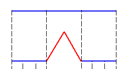
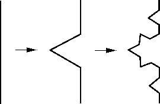
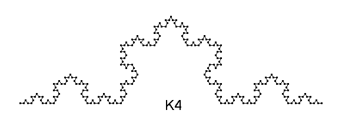

Zvečer je bila črta še čisto normalna. Lepo gladka je potekala od točke A do točke B.
A zjutraj se je zbudila s čudnim občutkom. Odtavala je pred ogledalo in groza! Ni bila več lepo gladka. Nad njeno srednjo tretjino se je bohotil mozolj.
Ampak kakšen – špičast, trikoten z robovi kar take dolžine, kot je bila prej dolžina srednje črte.
In naslednji dan ...
Proces se ni ustavil!
In po 4 dneh
Končno ji je njena najboljša prijateljica, krožnica, povedala za čudovito kremo! Če se namaže z njo po vsakem delčku svoje kože, bo rast mozoljev vsaj ustavljena. A krema je draga ... In za vsak cm potrebuje črta vsaj 6 g te kreme. Koliko jo mora kupiti, če je bila na začetku dolga d in je preteklo že n dni, odkar je dobila prvi mozolj?
Napiši program, ki prebere dolžino črte d in število dni n ter izpiše vsaj koliko g kreme mora kupiti.